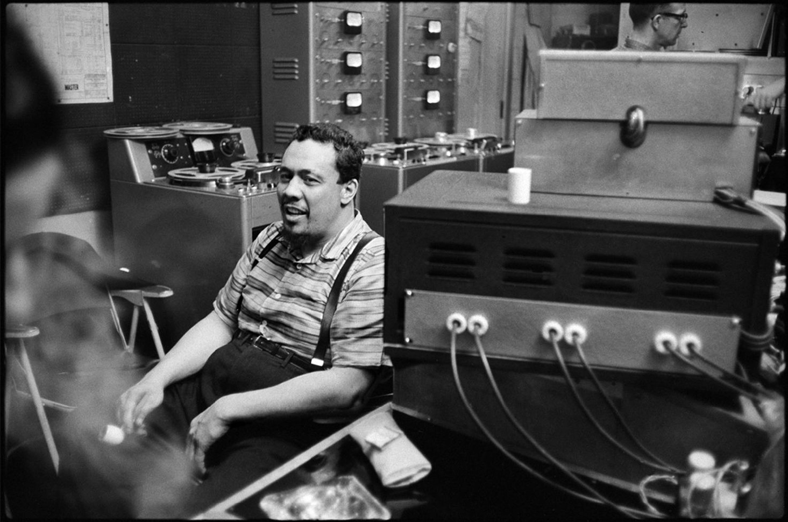

Pithecanthropus erectus


Pubblicato a luglio 1956. Registrato il 30 gennaio 1956.
Cliccare sulle immagini per ascoltare!
Pubblicato a luglio 1956. Registrato il 30 gennaio 1956.


Pubblicato ad agosto 1957. Registrato tra il 13 febbraio e il 12 marzo 1957.


Pubblicato il 15 settembre 1959. Registrato tra il 5 e il 12 maggio 1959.


Pubblicato nel 1962. Registrato tra il 18 luglio e il 6 agosto 1957.